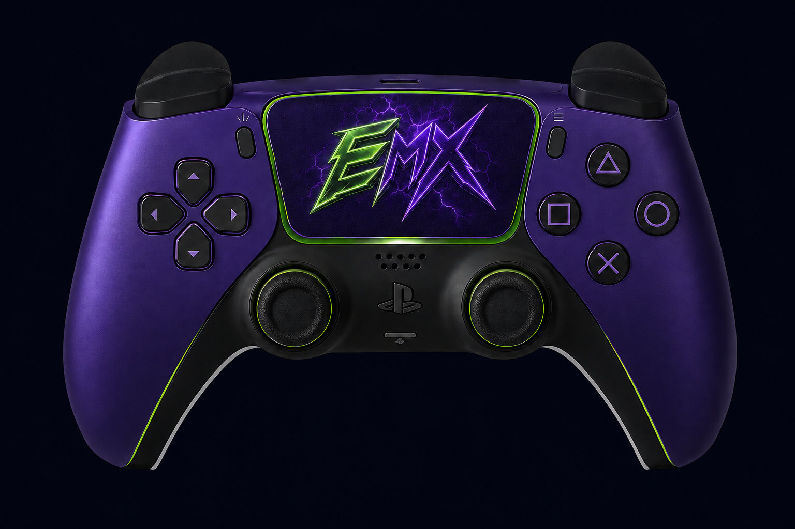

Real previews
Product pages use actual EMX interfaces and current release material — not invented dashboards.
ABOUT EMX
EMX is built by one independent developer. It started because I kept running into software that looked dated, felt confusing, or didn't do what it promised — so I started building my own. Those personal projects became EMX.

THE PERSON BEHIND IT
I'm the solo developer and founder behind EMX. Most of what I know came from doing the work — building real projects, testing them on my own machine, and refining them from real use. If I wouldn't run it on my own PC, it doesn't ship.
WHAT I BUILD
RECEIPTS, NOT CLAIMS
Real EMX software, shown with real interface captures from the current releases.
WINDOWS SOFTWAREEMX Custom OSHardware-aware Windows setup profiles with backups, change evidence, and recovery controls.View product
 DESKTOP MACRO APPEMX VOLT MacroRust-powered keyboard & mouse macro control with saved binds, timing profiles, and a visible emergency stop.View product
DESKTOP MACRO APPEMX VOLT MacroRust-powered keyboard & mouse macro control with saved binds, timing profiles, and a visible emergency stop.View product
 WINDOWS TUNINGTweak DashboardReversible performance tuning with backups, Game Session Mode, action logs, and an Undo Center.View product
WINDOWS TUNINGTweak DashboardReversible performance tuning with backups, Game Session Mode, action logs, and an Undo Center.View product

CONTROLLER MACROEMX Controller MacroPlayStation-first Double Edit and Drag with configurable bindings, presets, and a Windows download.View product FREE CAPTURE APPEMX ClipsLocal-first instant replay recorder for Windows — arm once, hit your hotkey, keep the moment.Open Clips
FREE CAPTURE APPEMX ClipsLocal-first instant replay recorder for Windows — arm once, hit your hotkey, keep the moment.Open Clips
THE EMX JOURNEY
One line, four steps — from a personal fix to a software brand.
HOW EMX WORKS
Understandable before you buy, recoverable after a change.
Product pages use actual EMX interfaces and current release material — not invented dashboards.
System-changing tools preview, back up, log, verify, and give you a reliable way back.
No guaranteed FPS or ping claims. Compatibility is stated as verified, limited, or unavailable.
Releases get updated from real testing and feedback. If something's rough, it gets fixed.
THE EMX ECOSYSTEM
Three sides of EMX, connected — each one makes the core stronger.
Windows tools, macros, optimization, and free utilities — the heart of the brand.
See productsFortnite / UEFN work is where I experiment, test ideas, and discover problems worth solving.
Fortnite mapsThe same software experience, applied to custom tools and websites made to spec.
Custom buildsMY PROMISE
STRAIGHT ANSWERS
When you contact EMX, you're talking to the developer behind it — not a support script. Questions before you buy, or an idea for a build, are always welcome.
WORK WITH EMX
Every EMX product is built, tested, and improved by the same developer you'll be talking to. No middle layer, no outsourced support — just the person who made it.
Prefer email? emxbiz@emxtweaks.com